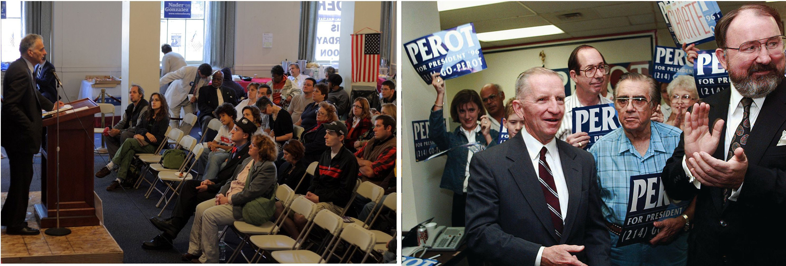
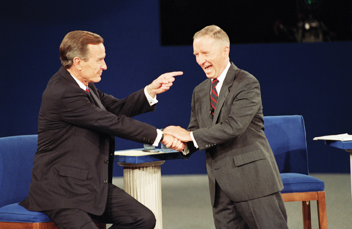

After reading this section, you should be able to answer the following questions:
A minor partyAlso known as a third party, it is an organization that is not affiliated with the Democrats or Republicans, contests in a limited number of elections, and does not receive large pluralities of votes., or third party, is an organization that is not affiliated with the two major American parties—the Democrats or Republicans. Minor parties run candidates in a limited number of elections and they do not receive large pluralities of votes. They arise when the two major parties fail to represent citizens’ demands or provide the opportunity to express opposition to existing policies. Citizens often form a minor party by uniting behind a leader who represents their interests.
Minor parties raise issues that the Democrats and Republicans ignore because of their tendency to take middle-of-the road positions. As a result, minor parties can be catalysts for change.Daniel A. Mazmanian, Third Parties in Presidential Elections (Washington, DC: Brookings Institution, 1974). The Progressive Party backed the women’s suffrage movement in the early twentieth century, which led to the passage of the Nineteenth Amendment. Child labor laws, the direct election of US senators, federal farm aid, and unemployment insurance are policies enacted as a result of third-party initiatives.Micah L. Sifry, Spoiling for a Fight (New York: Routledge, 2003).
More recently, the Tea PartyA loosely organized, conservative-leaning grassroots movement that qualifies as a political party as candidates run for office under its label. has raised issues related to the national debate, government bailouts to failing industries, and the health care system overhaul. The Tea Party is a conservative-leaning grassroots political movement that emerged in 2009 when the Young Americans for Liberty in the state of New York organized a protest against state government “tax and spend” policies. The Tea Party–themed protest recalled events in 1773, when colonists dumped tea into Boston Harbor to demonstrate their opposition to paying a mandatory tax on tea to the British government. Subsequent Tea Party protests took place in states across the country. Tea Party supporters participated in national protests in Washington, DC, which drew thousands of supporters.
CNBC’s Rick Santelli’s Chicago Tea Party
(click to see video)The national protests were prompted by a video of a rant by CNBC editor Rick Santelli opposing government subsidies of mortgages that went viral after being posted on the Drudge Report.
Santelli called for a “Chicago Tea Party” protest, which ignited the movement. The Tea Party’s efforts were publicized through new media, including websites such as Tea Party Patriots, Facebook pages, blogs, and Twitter feeds.
Minor parties can invigorate voter interest by promoting a unique or flamboyant candidate and by focusing attention on a contentious issue.Daniel A. Mazmanian, Third Parties in Presidential Elections (Washington, DC: Brookings Institution, 1974). Voter turnout increased in the 1992 presidential contest for the first time in over two decades in part because of minor-party candidate Ross Perot.Diana Owen and Jack Dennis, “Antipartyism in the USA and Support for Ross Perot,” European Journal of Political Research 29 (1996): 383–400. Perot, a wealthy businessman, was a candidate for president in 1992 for the minor party, United We Stand America, receiving nearly twenty million votes. He ran again in 1996 as a member of the Reform Party and earned nearly eight million votes.John C. Green and William Binning, “Surviving Perot: The Origins and Future of the Reform Party,” in Multiparty Politics in America, ed. Paul S. Herrnson and John C. Green (Lanham, MD: Rowman & Littlefield, 1997), 87–102. Perot supporters were united in their distrust of professional politicians and opposition to government funding of social welfare programs.
Figure 10.7 Ross Perot and Ralph Nader Campaigning
Minor-party candidates Ross Perot and Ralph Nader did not come close to winning the presidency, but they did bring media attention to issues during the elections in which they ran.
Source: Photo (left) used with permission from AP/Eric Gay. Photo (right) courtesy of Sage Ross, http://commons.wikimedia.org/wiki/File:Ralph_Nader_and_crowd,_October_4,_2008.jpg.
Minor party candidates can be spoilersA minor-party candidate who takes away enough votes from a major-party candidate to influence the outcome of the election while not winning the election himself. in elections by taking away enough votes from a major party candidate to influence the outcome without winning. Minor parties collectively have captured over 5 percent of the popular vote in every presidential election since 1840, although individual minor parties may win only a small percentage of votes.Steven J. Rosenstone, Roy L. Behr, and Edward H. Lazarus, Third Parties in America, 2nd ed. (Princeton, NJ: Princeton University Press, 2000). Green Party candidate Ralph Nader was considered by some analysts to be a spoiler in the 2000 presidential campaign by taking votes away from Democratic contender Al Gore in Florida. George W. Bush received 2,912,790 votes in Florida compared to Al Gore’s 2,912,253 votes.Committee for the Study of the American Electorate, “Votes Cast for Presidential Candidates,” accessed March 26, 2011, http://www.fairvote.org/turnout/prrevote2000.htm. If 540 of Nader’s 96,837 votes had gone to Gore, Gore might have ended up in the White House.Micah L. Sifry, Spoiling for a Fight (New York: Routledge, 2003).
Minor parties can be classified as enduring, single-issue, candidate-centered, and fusion parties.
Some minor parties have existed for a long time and resemble major parties in that they run candidates for local, state, and national offices. They differ from major parties because they are less successful in getting their candidates elected.Steven J. Rosenstone, Roy L. Behr, and Edward H. Lazarus, Third Parties in America, 2nd ed. (Princeton, NJ: Princeton University Press, 2000).
The Libertarian Party, founded in 1971, is an enduring minor partyA minor party that has existed for a long time and regularly runs candidates for office., which is a type of minor party that has existed for a long time and regularly fields candidates for president and state legislatures. The Libertarians are unable to compete with the two major parties because they lack a strong organizational foundation and the financial resources to run effective campaigns. The party also holds an extreme ideological position, which can alienate voters. Libertarians take personal freedoms to the extreme and oppose government intervention in the lives of individuals, support the right to own and bear arms without restriction, and endorse a free and competitive economic market.Terry Savage, “The Libertarian Party: A Pragmatic Approach to Party Building,” in Multiparty Politics in America, ed. Paul S. Herrnson and John C. Green (Lanham, MD: Rowman & Littlefield, 1997), 141–45.
Sometimes called ideological parties, single-issue minor partiesA minor party that exists to promote a particular policy agenda. exist to promote a particular policy agenda. The Green Party is a product of the environmental movement of the 1980s. It advocates environmental issues, such as mandatory recycling and strong regulations on toxic waste.Greg Jan, “The Green Party: Global Politics at the Grassroots,” in Multiparty Politics in America, ed. Paul S. Herrnson and John C. Green (Lanham, MD: Rowman & Littlefield, 1997), 153–57.
Candidate-centered minor partiesA minor party formed around a candidate who is able to rally support based on her own message. form around candidates who are able to rally support based on their own charisma or message. Former World Wrestling Federation star Jesse “The Body” Ventura was elected governor of Minnesota in 1998 under the Independence Party label, an offshoot of the Reform Party. The plainspoken, media savvy Ventura made the need for an alternative to two-party domination a core theme of his campaign: “It’s high time for a third party. Let’s look at Washington. I’m embarrassed. We’ve got a lot of problems that the government should be dealing with, but instead, for the next nine months, the focus of this nation will be on despicable behavior by career politicians. If this isn’t the right time for a third party, then when?”Micah L. Sifry, Spoiling for a Fight (New York: Routledge, 2003).
Fusion minor partiesAlso known as alliance parties, they are enduring or single-issue minor parties that engage in the practice of cross endorsement, backing candidates who appear on a ballot under more than one party label., also known as alliance parties, are enduring or single-issue minor parties that engage in the practice of cross endorsementThe minor party practice of backing candidates who appear on a ballot under more than one party label., backing candidates who appear on a ballot under more than one party label. Fusion parties routinely endorse candidates who have been nominated by the two major parties and support their causes. Cross endorsement allows minor parties to contribute to the election of a major-party candidate and thus gain access to officeholders. In addition to giving a major-party candidate an additional ballot position, fusion parties provide funding and volunteers.
Only eight states permit the practice of cross endorsement. The most active fusion parties are in New York. The Liberal Party and the Democratic Party cross endorsed Mario Cuomo in the 1990 New York governor’s race, leading him to defeat his Republican Party and Conservative Party opponents handily. The Conservative Party and the Republican Party cross endorsed George Pataki in the 2000 governor’s race, leading him to victory.J. David Gillespie, Politics at the Periphery (Columbia: University of South Carolina Press, 1993). During the 2010 midterm elections, the Tea Party cross endorsed several successful candidates running in the primary under the Republican Party label, upsetting mainstream Republican candidates. Some of the Tea Party–endorsed candidates, such as US Senate candidate Rand Paul in Kentucky, went on to win the general election.
The Tea Party
There has been almost as much discussion about media coverage of the Tea Party as there has been about the organization’s issue positions, candidate endorsements, and protest activities. Tea Party activists, such as former Alaska governor and Republican vice presidential candidate Sarah Palin, have lambasted the traditional news media for being tied to special interests and irrelevant for average Americans. Instead, Tea Party leaders have embraced social media, preferring to communicate with their supporters through Facebook and Twitter.
Early Tea Party protests against government economic policies received little mainstream press attention. Media coverage increased as the Tea Party staged rowdy protests against government health care reform, and public interest in the movement grew. Stories by major news organizations focused on the evolution of the Tea Party, its positions on issues, its membership, and its most vocal spokespersons. Tea Party rallies garnered extensive attention from mainstream media as well as political bloggers. The Tea Party received the lion’s share of media coverage on election night in 2010, as the mainstream press framed the election results in terms of public dissatisfaction with the political status quo as evidenced by victories by Tea Party–backed candidates.Brian Stelter, “In News Coverage, Tea Party and Its ‘New Personalities’ Hold the Spotlight,” New York Times, November 3, 2010.
Coverage of the Tea Party differs widely by media outlet. CNN reports of a Tea Party protest in Chicago featured on-site reporters aggressively interviewing average citizens who were participating in the event, challenging them to defend the Tea Party’s positions on issues. CNN and network news outlets reported that members of Congress had accused Tea Party protestors of anti-Obama racism based on racially charged statements and signs held by some protestors. Fox News, on the other hand, assumed the role of Tea Party cheerleader. Fox analyst Tobin Smith took the stage at a Tea Party rally in Washington, DC, and encouraged the protestors. Reporting live from a Boston Tea Party protest, Fox Business anchor Cody Willard encouraged people to join the movement, stating, “Guys, when are we going to wake up and start fighting the fascism that seems to be permeating this country?”Tony Rogers, “Both Fox News and CNN Made Mistakes in Tea Party Protest Coverage,” About.com Journalism, accessed March 26, 2011, http://journalism.about.com/od/ethicsprofessionalism/a/teaparty.htm.
Tea Party signs at a rally. Media coverage of Tea Party rallies focused on racially charged signs prompting the movement’s leaders to decry the mainstream press.
Source: Photo courtesy of Bonzo McGrue, http://commons.wikimedia.org/wiki/File:BirthCertificate.jpg.
Signs oppose the press. The majority of Tea Party signs at rallies state issue positions without racially charged messages.
Source: Photo courtesy of Ivy Dawned, http://www.flickr.com/photos/ivydawned/3446727838/.
Rally Signs Depict Issue Positions
Source: Photo courtesy of Sage Ross, http://www.flickr.com/photos/ragesoss/3445951311/.
Studies of mainstream press coverage of the Tea Party also vary markedly depending on the source. A 2010 report by the conservative Media Research Center found that the press first ignored and then disparaged the Tea Party. The report alleged that ABC, CBS, NBC, and CNN framed the Tea Party as a fringe or extreme racist movement.Rich Noyes, “TV’s Tea Party Travesty,” Media Research Center, April 15, 2010, accessed March 26, 2011, http://www.mrc.org/specialreports/uploads/teapartytravesty.pdf. Conversely, a 2010 survey conducted by the mainstream newspaper the Washington Post found that 67 percent of local Tea Party organizers felt that traditional news media coverage of their groups was fair, compared to 23 percent who considered it to be unfair. Local organizers also believed that news coverage improved over time as reporters interviewed Tea Party activists and supporters and gained firsthand knowledge of the group and its goals.Amy Gardner, “Tea Party Groups Say Media Have Been Fair, Survey Finds,” Washington Post, October 26, 2010, accessed March 26, 2011, http://www.washingtonpost.com/wp-dyn/content/article/2010/10/26/AR2010102602796.html. Both reports were debated widely in the press.
A minor-party candidate has never been elected president. In the past five decades, minor parties have held few seats in Congress or high-level state offices. Few minor party candidates have won against major-party candidates for governor, state representative, or county commissioner in the past two decades. Minor-party candidates have better luck in the approximately 65,000 nonpartisan contests for city and town offices and school boards in which no party labels appear on the ballot. Hundreds of these positions have been filled by minor-party representatives.Micah L. Sifry, Spoiling for a Fight (New York: Routledge, 2003), 45.
A majority of the public favors having viable minor-party alternatives in elections.Micah L. Sifry, Spoiling for a Fight (New York: Routledge, 2003), 45. Why, then, are minor parties unable to be a more formidable presence in American politics?
One major reason for two-party dominance in the United States is the prominence of the single-member district plurality systemAlso known as first-past-the-post or winner-take all, the system in which the highest vote getter in a district in federal and most state legislative elections gains a seat in office. of elections,Maurice Duverger, Party Politics and Pressure Groups (New York: Thomas Y. Crowell, 1972). also known as winner-take-all elections. Only the highest vote getter in a district in federal and most state legislative elections gains a seat in office. Candidates who have a realistic chance of winning under such a system are almost always associated with the Democratic and Republican parties, which have a strong following among voters and necessary resources, such as funding and volunteers to work in campaigns.
In contrast, proportional representation (PR) systemsElections are held for multiple seats in a district, allowing seats to be distributed according to the proportion of the vote won by particular political parties., such as those used in most European democracies, allow multiple parties to flourish. PR systems employ larger, multimember districts where five or more members of a legislature may be selected in a single election district. Seats are distributed according to the proportion of the vote won by particular political parties. For example, in a district comprising ten seats, if the Democratic Party got 50 percent of the vote, it would be awarded five seats; if the Republican Party earned 30 percent of the vote, it would gain three seats; and if the Green Party earned 20 percent of the vote, it would be granted two seats.Douglas J. Amy, Real Choices/New Voices (New York: Columbia University Press, 1993). PR was used for a short time in New York City council elections in the 1940s but was abandoned after several communists and other minor-party candidates threatened the Democratic Party’s stronghold.Clinton Rossiter, Parties and Politics in America (Ithaca, NY: Cornell University Press, 1960).
Minor parties are hindered by laws that limit their ability to compete with major parties. Democrats and Republicans in office have created procedures and requirements that make it difficult for minor parties to be listed on ballots in many states. In Montana, Oklahoma, and several other states, a candidate must obtain the signatures of least 5 percent of registered voters to appear on the ballot. A presidential candidate must collect over one million signatures to be listed on the ballot in every state. This is an insurmountable barrier for most minor parties that lack established organizations in many states.Steven J. Rosenstone, Roy L. Behr, and Edward H. Lazarus, Third Parties in America, 2nd ed. (Princeton, NJ: Princeton University Press, 2000).
Campaign finance laws work against minor parties. The 1974 Federal Election Campaign Act and its amendments provide for public financing of presidential campaigns. Rarely has a minor-party candidate been able to qualify for federal campaign funds as the party’s candidates must receive 5 percent or more of the popular vote in the general election. Similar barriers hinder state-level minor-party candidates from receiving public funding for taxpayer-financed campaigns, although some states, such as Connecticut, are debating plans to rectify this situation.
The financial disadvantage of minor parties impedes their ability to amass resources that are vital to mounting a serious challenge to the two major parties. They lack funds to establish and equip permanent headquarters. They cannot hire staff and experienced consultants to conduct polls, gather political intelligence, court the press, generate new media outreach, or manage campaigns.Steven J. Rosenstone, Roy L. Behr, and Edward H. Lazarus, Third Parties in America, 2nd ed. (Princeton, NJ: Princeton University Press, 2000).
Minor parties rarely receive significant media coverage except when they field a dynamic or outlandish candidate, such as Jesse Ventura, or when they are associated with a movement that taps into public concerns, such as the Tea Party. The dominant horserace frame employed by the media focuses on who is ahead and behind in an election and usually tags minor-party candidates as losers early in the process. Media treat minor parties as distractions and their candidates as novelty acts that divert attention from the main two-party attractions.
Minor parties often are unable to air televised campaign ads because they lack funds. Even in the digital era, television advertising is an essential part of campaigns because it allows candidates to control their own message and reach large numbers of voters. Minor-party candidates have difficulty gaining publicity and gaining recognition among voters when they cannot advertise.
Minor-party candidates routinely are excluded from televised debates in which major-party candidates participate.Steven J. Rosenstone, Roy L. Behr, and Edward H. Lazarus, Third Parties in America, 2nd ed. (Princeton, NJ: Princeton University Press, 2000). By being allowed to participate in the 1992 presidential debates, Reform Party candidate Ross Perot achieved national visibility and symbolic equality with incumbent president George W. Bush and Democratic candidate Bill Clinton.
Giant Sucking Sound: Ross Perot 1992 Presidential Debate
(click to see video)Perot received significant press coverage from his debate performance.
Figure 10.8 Ross Perot Participating in the 1992 Presidential Debate
Minor-party candidates rarely have the opportunity to participate in televised presidential debates. An exception was Reform Party candidate Ross Perot, whose campaign was bolstered by his inclusion in the 1992 presidential debate with Republican George W. Bush and Democrat Bill Clinton.
Source: Used with permission from AP Photo/Greg Gibson.
These benefits were denied Ralph Nader when he was excluded from the presidential debates in 2000 because the Commission on Presidential Debates ruled that Nader did not have enough voter support to warrant inclusion.
When a minor-party movement gains momentum, the Republican and Democratic parties move quickly to absorb the minor party by offering enticements to their members, such as support for policies that are favored by the minor party. Major-party candidates appeal to minor-party supporters by arguing that votes for minor-party candidates are wasted.Clinton Rossiter, Parties and Politics in America (Ithaca, NY: Cornell University Press, 1960). Major parties are often successful in attracting minor-party voters because major parties are permeable and ambiguous ideologically.J. David Gillespie, Politics at the Periphery (Columbia: University of South Carolina Press, 1993).
After the Democrats in Congress were instrumental in passing the Voting Rights Act in 1964, the Republican Party absorbed the southern Dixiecrats, a Democratic Party faction opposed to the legislation. The two major parties tried to attract Ross Perot’s Reform Party supporters after his 1992 presidential bid, with the Republican Party succeeding in attracting the lion’s share of votes. The Republican Party’s position against big government appealed to Perot supporters.Ronald B. Rapoport and Walter J. Stone, “Ross Perot Is Alive and Well and Living in the Republican Party: Major Party Co-optation of the Perot Movement and the Reform Party,” in The State of the Parties, 2nd ed., ed. John C. Green and Rick Farmer (Lanham, MD: Rowman & Littlefield, 2003), 337–53. Even though the Tea Party gravitates toward the Republican Party, Republicans have not universally accepted it.
Minor parties offer an alternative to the dominant Republican and Democratic parties, but they have difficulty surviving. They arise to challenge the two major parties when people feel that their interests are not being met. There are four major types of minor parties: enduring, single-issue, candidate-centered, and fusion parties. Minor parties have difficulty winning high-level office but are able to fill seats at the county and local level. There are numerous challenges faced by minor parties in American politics, including winner-take-all elections, legal obstacles, lack of resources, and limited media coverage.